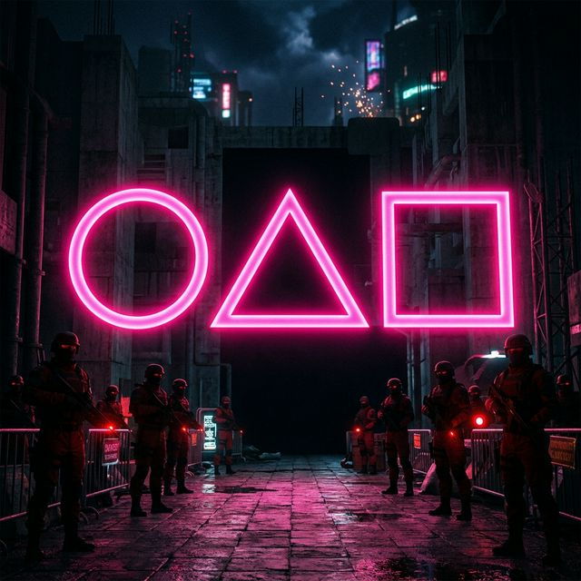
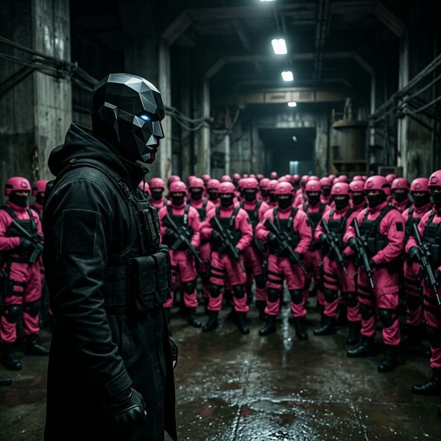
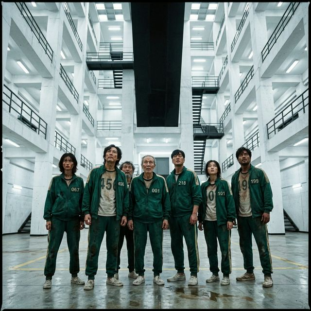

가장 먼저 시선을 잡아끄는 것은 주인공 성기훈(이정재)의 완전히 달라진 눈빛입니다. 시즌 1 마지막에서 빨간 머리로 염색하며 복수를 다짐했던 그가, 이번 티저에서는 피 묻은 검은색 정장을 입고 무표정하게 누군가를 응시하는 장면으로 등장합니다.
특히 영상 15초 부근, 그가 다시 참가자 번호가 박힌 초록색 트레이닝복 무리 속을 걷는 모습이 교차 편집되면서 "그가 자의로 게임에 다시 잠입한 것인가?" 아니면 "주최 측의 새로운 장기말로 전락한 것인가?"에 대한 거대한 의문을 낳았습니다. 확실한 것은 그가 더 이상 돈에 눈이 멀어 게임을 벌벌 떨며 치르던 나약한 인간이 아니라는 사실입니다. 그의 목적은 오직 '게임의 진정한 파괴'에 맞춰져 있음이 암시되었습니다.

이번 시즌 3 티저에서 절대 놓쳐선 안 될 메인 포인트는 단연 '프론트맨'입니다. 티저 후반부, 언제나 차가운 금속성 마스크로 얼굴을 가린 채 명령을 내리던 그의 마스크 우측 하단에 커다란 금이 가 있는 장면이 포착되었습니다. 이는 완벽해 보였던 주최 측의 통제 시스템에 심각한 균열이 발생했음을 의미합니다.
아울러, 시즌 1에서 죽은 줄로만 알았던 그의 동생 황준호(위하준) 형사에 대한 생사 떡밥 역시 이번 시즌의 강력한 시한폭탄입니다. 오일남(오영수)의 죽음 이후 게임의 실질적 지배자가 된 프론트맨은, 단순히 부자들의 오락을 넘어서 선택적 생존이라는 자신만의 비뚤어진 이상향 향해 폭주할 것으로 보입니다.
시즌 1이 무궁화꽃이 피었습니다, 달고나, 줄다리기 등 한국의 전통 놀이에 천착했다면, 시즌 3의 짤막한 세트장 실루엣은 보다 '광기 어린 스케일'을 자랑합니다.
| 게임 세트장 실루엣 | 예상되는 전통 놀이 모티브 | 위협(사망) 요소 분석 |
|---|---|---|
| 거대한 수조와 블록 섬 | 징검다리 건너기 확장판 or '땅따먹기' | 수면 아래 숨겨진 트랩 혹은 익사. (티저 33초경 참가자가 물속으로 끌려 들어가는 장면 포착) |
| 수백 개의 붉은 천이 매달린 방 | 수건돌리기 혹은 '술래잡기' | 시야가 차단된 밀실에서 이루어지는 암살극. 침묵을 지키지 않으면 천장에 달린 센서가 반응하는 구조로 추정. |
| 초대형 시소가 놓인 모래판 | 시소게임 (무게중심 평형) | 참가자 간의 배신과 팀킬을 유도하는 최악의 심리전. 한쪽이 무게를 견디지 못하면 바닥으로 추락. |

예고편 마지막을 장식한 [10.31]이라는 붉은색 타이포그래피는 전 세계 시청자들의 환호성을 자아냈습니다. 미국의 최대 명절이자 전 세계적 코스튬 시즌인 할로윈 데이에 오징어게임의 대미를 장식할 시즌 3를 공개하는 것은, 넷플릭스가 이 IP(지식재산권)의 붐업을 극대화하겠다는 야심 찬 전략입니다. 올해 할로윈에는 거리에 분홍색 점프수트와 초록색 트레이닝복이 그 어느 때보다 넘쳐날 것으로 확실시됩니다.
새롭게 투입된 임시완, 강하늘, 박성훈 등 신규 캐스팅 군단이 어떤 번호를 달고 어떤 미친 연기력을 보여줄지 벌써부터 심장이 요동칩니다. 10월 31일까지 앞으로 약 7개월, 넷플릭스는 분명 한 달 주기로 더 강력한 본편 트레일러들을 하나씩 풀어놓으며 글로벌 마케팅을 전개할 것입니다. 숨겨진 떡밥이 풀리는 대로 가장 빠르고 날카로운 심층 분석 리포트로 다시 찾아오겠습니다!